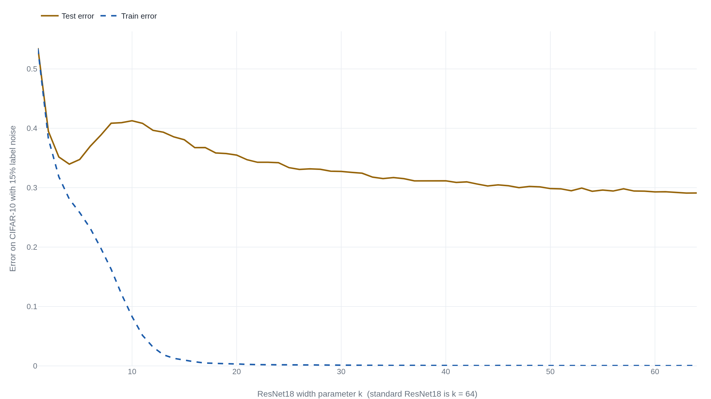

A network's error peaks where it can just fit its training data, then falls again
Feed a network 4.5 times the training data and it can get worse, a limit one of the two 2019 papers behind double descent measured directly.
Why this matters
You keep hearing that making an AI model bigger makes it better. You also carry an older warning, that a model which learns its training data too well will do badly in the real world. Both cannot be flatly true, and the result that squares them has a name: double descent. It is the reason many practitioners no longer flinch at a model that fits its training data perfectly. This lesson walks through the two 2019 papers that drew the effect and measured it. By the end you will know what the old bias-variance rule predicted and what the real curve looks like. You will know where the interpolation threshold sits, why error is worst there, and when more size or data stops helping.
- 01
- OpenAI's 2020 scaling paper got the curve right and the budget wrong: where the modern belief that bigger models do better comes from, and where it was corrected.
- 02
- A small network memorized modular arithmetic, then generalized a million steps later: a different surprise about generalization, this one measured over training time rather than model size.
The sweet spot the textbook drew
Every course on machine learning teaches a warning. A model that is too small cannot capture the pattern in its data and does poorly. A model that is too large learns the training data too well, soaking up its quirks and mistakes, then failing on anything new. That second failure is overfitting: the model has fit its training examples so closely that its accuracy on unseen examples drops. The number that catches it is test error, the fraction of new examples the model gets wrong. Training error is the fraction of the training examples it gets wrong. From here the textbook rule follows. Drive training error to zero and you have almost certainly overfit. Belkin and his coauthors state the corollary a student would recognize: a model with zero training error is expected to generalize poorly.1 Between too small and too large lies a sweet spot, and the practitioner's job was to find it and stop there.
You have also absorbed a newer slogan, that a bigger model is a better one, from the scaling laws of the last few years. The two ideas sit badly together. In 2019 a team at Harvard and OpenAI put the discomfort in a title: "Deep double descent: where bigger models and more data hurt."2 Their claim is that the textbook curve is only the first half of the picture.
A second fall after the peak
Mikhail Belkin, Daniel Hsu, Siyuan Ma and Soumik Mandal drew the missing half and gave it its name. Their double-descent curve keeps the textbook U on the left and extends it to the right. As a model grows it eventually reaches the point where it is just big enough to fit every training example exactly, driving training error to zero. That point is the interpolation threshold. The classical U says error bottoms out somewhere before the threshold and climbs as you approach it. Belkin's curve agrees up to that point, where test error peaks. Then it adds what the textbook left off. Past the threshold, as the model keeps growing, test error falls a second time, often below the best the old sweet spot could reach.1 They showed the shape on several methods. One was a predictor built from random features of the MNIST handwritten digits, trained on 10,000 examples, where the peak landed exactly as the number of features rose to equal that count.1
Nakkiran and his coauthors drew the same curve on the networks people actually train. Their headline case is a ResNet18, a standard image classifier, learning CIFAR-10, small color photographs in ten classes. To make the effect stark they added label noise: a set fraction of the training images had their labels swapped for a random wrong class, a cat stamped "truck," fixed for the run. Here that fraction is 15 percent. They then grew the network through a single width setting, k, and recorded its error at each size.

Read the curve from the left. At the smallest widths the network is too weak, and test error is high. It falls to a first minimum near k = 4, the classical sweet spot. Then it climbs again, to a peak near k = 10, exactly where training error is plunging toward zero and the network is becoming just able to fit the noisy training set. Past that peak, as k heads for the standard width of 64, test error drops a second time, all the way to its lowest point on the curve, roughly 0.29. The best network on the graph is the biggest one, and it sits well on the far side of the threshold the textbook told you to avoid.
The rule you were taught describes the left half of that curve. Fitting the training data exactly is dangerous only in a narrow band around the interpolation threshold. Keep making the model bigger and you come out the other side, where it fits the data perfectly and generalizes better than the careful, medium-sized model did.2
Why the model at the threshold is the fragile one
Why is test error worst exactly where the model can just fit the data? Nakkiran's team give an argument. At the threshold there is effectively one setting of the network that fits the training set, with no room to spare. Forced to pass through every training point, including the mislabeled ones, it bends itself out of shape to reach them, and that bending is what a test image pays for. Below the threshold the network cannot fit the data at all, so it never chases individual points and picks up only the broad pattern. Above the threshold many different settings fit the training set equally well. The training procedure, ordinary gradient descent, tends to settle on one that reaches the required points smoothly. It folds in the noisy examples without distorting what it predicts elsewhere.2 The peak shows up, the paper argues, whenever the true pattern in the data and the model's own assumptions are mismatched.
This is a claim about model size, and it is worth keeping apart from a neighbor. A separate surprise called grokking tracks a fixed network over training time and finds generalization arriving long after the training error settles. Double descent moves along a different axis. The model changes size, each network is trained to completion, and the quantity on the horizontal is how big the model is, not how long it ran.
Where more data made the model worse
If a bigger model wins past the threshold, is more data always a good trade? Not everywhere. The same paper holds the exception. Adding training data pushes the interpolation threshold right: a larger training set takes a larger model to fit exactly. So a network comfortably past the threshold can be dragged back toward the fragile critical region simply by adding data. Nakkiran's team saw this on a Transformer, the standard translation network, learning IWSLT'14 German-to-English. Raising the training set by a factor of 4.5, from 4,000 to 18,000 sentence pairs, raised its test loss, the translation model's measure of error, across a whole band of model sizes.2 The title was not for effect. More data hurt, at fixed model sizes, in a measured experiment.
The sharp peak also owes a great deal to the label noise. Nakkiran's team saw every form of the effect most strongly when noise was present. They swept it from 0 to 5, 10, 15 and 20 percent, and the critical region grew from a gentle plateau into a tall peak as the noise rose.2 Noise is not strictly required. Clean training sets still produced real peaks for these networks on the harder CIFAR-100 images and for the translation Transformer.2 Noise sharpens the peak and moves where it lands, but a clean dataset does not erase it.
How much of this survived
The result is now cited to bury the old fear of overfitting, sometimes as a blanket permit: make the model bigger and generalization takes care of itself. The reframing is genuine. A survey of the field calls the moment a farewell to the bias-variance tradeoff and reports that heavily overparameterized models often beat the best smaller one.3 Popular summaries fold it into the flat line that larger models simply perform better.4 Two lines of later work put fences around that strong reading.
The peak is not a law of nature. It is a property of training with little restraint. Nakkiran, Venkat, Kakade and Ma proved that for a simple family of linear models with well-behaved data, an optimally tuned ridge penalty makes test error fall steadily as either the model or the dataset grows, erasing the peak. A ridge penalty is a standard term that discourages large weights. They showed the same tuning eases it for neural nets.5 The second qualification is about counting. Curth, Jeffares and van der Schaar argue that in classical methods such as linear regression, trees and boosting, the raw parameter count hides more than one axis of complexity. Measure effective complexity properly, they find, and the apparent second descent folds back into the textbook U.6 Their scope is those classical methods. They do not claim the network curves above are an illusion.
None of this was measured on a large language model. The networks here classify small photographs and translate short sentences, on datasets a single lab could run. Reading double descent as the reason today's largest models work extends the curve past anything the papers put on a graph. It also lands in a separate debate, over whether the jumps in large-model benchmarks are real or an artifact of scoring. That debate turns on how ability is measured, a different question from the interpolation peak.
- The curve reproduces across image classifiers, translation networks, random features, forests and boosting.
- The peak at the interpolation threshold, and the second descent past it, are real measured effects, not a slogan.
- The papers refute the strong moral themselves: a wider model can be worse, and more data can hurt.
- The sharpest peaks lean on label noise and light regularization; tuned regularization can remove them.
- In classical methods the second descent may be an artifact of how parameters are counted.
- These are specific setups at CIFAR scale, not a guarantee that more of anything always helps.
The takeaway
The textbook drew half a curve. Up to the point where a model can just fit its training data, error behaves the way the sweet-spot rule says, and fitting the data exactly is a real danger. Past that point the curve descends a second time, and the model that does best is a big one, comfortably beyond the threshold. That is the finding, and it holds across the image and translation networks the two papers tested. What does not follow is the slogan the result now carries. In a narrow band around the threshold a wider model is worse, and more training data can push a model back into that band. The sharpest version of the effect leans on corrupted labels and light regularization. The curve tells you when memorizing is safe. It does not promise that size alone decides how well a model does.
- 01
- The authors' released code and data: the raw runs behind the curve, with notebooks that redraw it for yourself.
- 02
- Dar, Muthukumar & Baraniuk, "A Farewell to the Bias-Variance Tradeoff?": a map of the theory that grew up around interpolating models.
Sources
- arXiv · Belkin, Hsu, Ma & Mandal, "Reconciling modern machine learning practice and the bias-variance trade-off" (PNAS, 2019)
- arXiv · Nakkiran, Kaplun, Bansal, Yang, Barak & Sutskever, "Deep Double Descent: Where Bigger Models and More Data Hurt" (2019)
- arXiv · Dar, Muthukumar & Baraniuk, "A Farewell to the Bias-Variance Tradeoff? An Overview of the Theory of Overparameterized Machine Learning" (2021)
- Wikipedia · "Double descent" (accessed 2026-09-04)
- arXiv · Nakkiran, Venkat, Kakade & Ma, "Optimal Regularization Can Mitigate Double Descent" (2020)
- arXiv · Curth, Jeffares & van der Schaar, "A U-turn on Double Descent: Rethinking Parameter Counting in Statistical Learning" (2023)